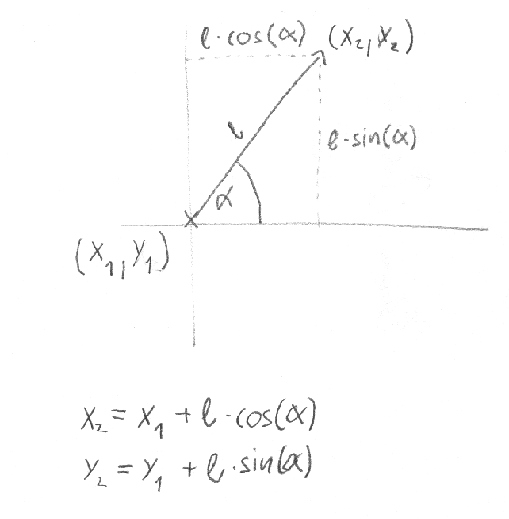

Koch görbe
Rajzoljatok Koch-görbét a képernyőre! A Koch-görbe vagy Koch-hópehely Helge von Koch, svéd matematikus által 1904-ben leírt fraktál, mely ilyen minőségében az egyik legelső.


Tipp: keressétek meg a Wikipédián a Koch görbét, és nézzétek meg, hogy épül fel!
A Teki osztály
Ahhoz, hogy fel tudjátok építeni a görbét, érdemes lehet egy Teknőc osztályt létrehozni.
A teknőc mindig egy adott koordinátájú ponton tartózkodik a rajzfelületen. A teknőc a saját koordinátáját tudja magáról.
A teknőcnek a konstruktorában adjuk át, hogy melyik bittérképre rajzoljon.
A teknőc orra mindig néz valamerre. A teknő tudja magáról, hogy milyen szögben áll az orra.
A teknőc három parancsot ért:
- jobbra(szög)
- balra(szög)
- előre(távolság)
Warning
A teknőc koordinátáit lebegőpontos számok formájában érdemes tárolni, különben a kerekítési hibák a parancsok során összeadódnak.
Valahogy így nézhet ki a Teknőc osztály:
class Teki
{
double xPos, yPos;
int orrSzög;
Graphics rajzlap;
public Teki(Graphics rajzlap)
{
this.rajzlap = rajzlap;
…
}
public void MenjElőre(int távolság)
{
…
}
public void ForduljJobbra(int szög)
{
…
}
public void ForduljBalra(int szög)
{
…
}
}
}
Egy kis segítség matekból:

Warning
A Math osztály szögfüggvényei radiánban várják a szögeket! Tipp:
Math.Cos(szog_fokban * Math.PI / 180)
Egyszerű alakzatok rajzolása
void Hatszög(Teki teknos)
{
for (int i = 0; i < 6; i++)
{
teknos.MenjElőre(100);
teknos.ForduljJobbra(60);
}
}
void Ötszög(Teki teknos)
{
for (int i = 0; i < 5; i++)
{
teknos.MenjElőre(200);
teknos.ForduljJobbra(144);
}
}
void Spirál(Teki teknos)
{
for (int i = 0; i < 20; i++)
{
teknos.MenjElőre(i * 10);
teknos.ForduljJobbra(60);
}
}
void Napocska(Teki teknos)
{
for (int i = 0; i < 36; i++)
{
teknos.MenjElőre(250);
teknos.ForduljJobbra(170);
}
}
Koch görbe rajzolás Tekivel
Az űrlapon létrehozhatunk a Teknőcből egy példányt, és irányítgathatjuk:
private void button2_Click(object sender, EventArgs e)
{
Teki béla = new Teki(this.CreateGraphics());
béla.MenjElőre(20);
béla.ForduljBalra(60);
béla.MenjElőre(20);
béla.ForduljJobbra(120);
béla.MenjElőre(20);
béla.ForduljBalra(60);
béla.MenjElőre(20);
}
A fenti példa kirajzolja a Koch-görbe egy darabját.
Írjunk egy rekurzív függvényt, mely kirajzolja a teljes görbét:
private void koch(Teki teki,int méret)
{
if (méret<5)
{
… rajzoljunk „méret” méretű görbét
}
else
{
… minden oldal helyére rajzoljunk görbét 1/3 mérettel(rekurzió)
}
}